Nixie Tap kit assembly instructions
Main page | User guide | Downloads
Got any feedback? Please write to hello@ this domain.
Last updated: 05.11.2019.
Last updated: 05.11.2019.
This short guide will help you solder your own Nixie Tap. Each image is clickable, and it reveals a higher-res version.
Good luck!
This product is designed around SMD parts. Passive parts in 0805 footprint make up the most of the soldering. Because of this, you will need an adequate soldering iron. At least Baku 936 or similar Aliexpress clone is recommended.
A few random tips:
As far as tools are required, a good-enough soldering iron is necessary, at least Aliexpress Baku 936, and I recommend a chisel type tip. You'll also need tweezers, solder and flux.
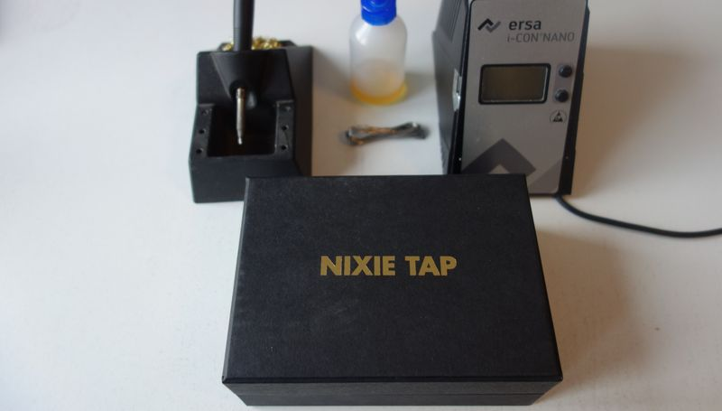Once you prepare the equipment, open the kit box and check contents. There should be three carboard sleeves and a USB cable.
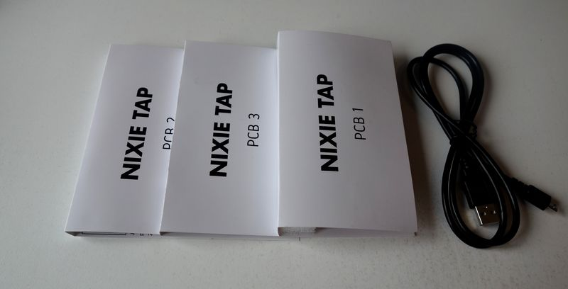If you have a kit version 1.0, there may be some parts which fell out of the sleeve. Please pick these parts up (if there are any), open the sleeves and compare with the picture below.
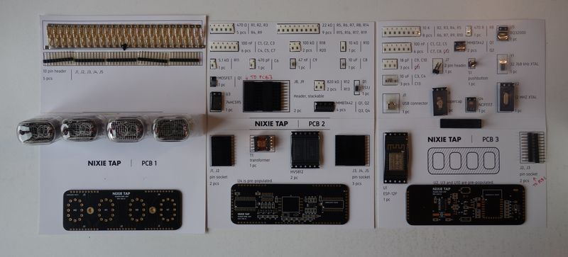Start by plugging and soldering the 10 pin headers.
Note that, due to manufacturing tolerances, insertion may be difficult. In that case, try plugging in left side first, and then right, and then middle.
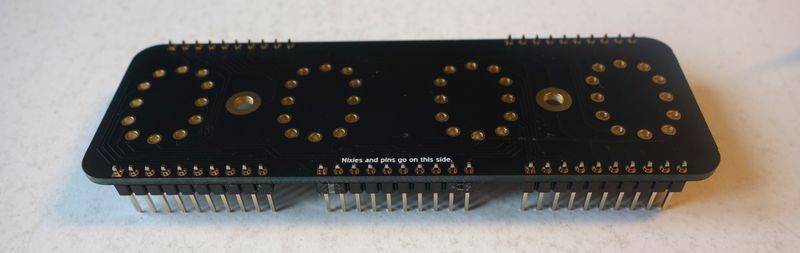Then, move on to plugging in the Nixie pins. These should plug in with less effort.
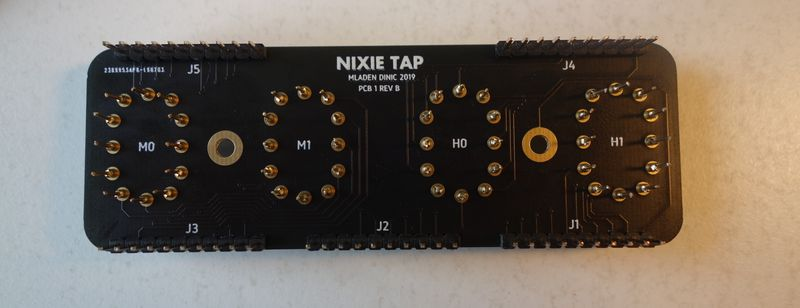Please make sure that Nixie pins are sitting flush with the PCB, as on the picture below.
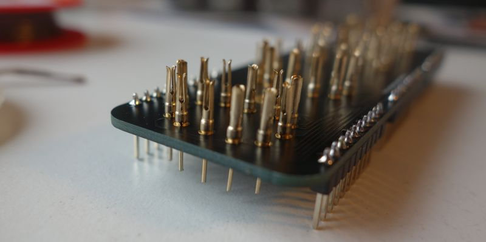Solder the Nixie pins and plug in the Nixie tubes. Mind the orientation of the digits, it should be like on picture below. The easiest way to check is to look at digit 3.
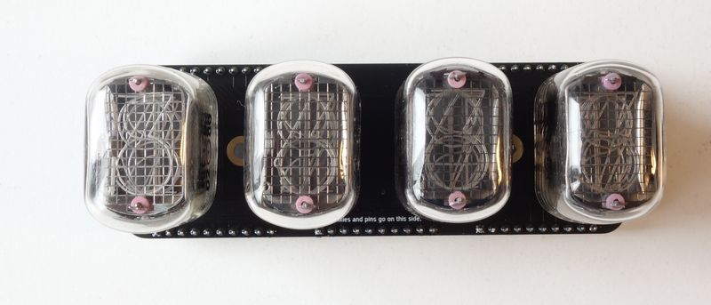This PCB mostly contains SMD parts, so, it's time to get serious. How you chose to solder is up to you, but the recommended method is to fix a part on one side, then solder the other side.
If you are right-handed, the easiest way is to first apply solder to right side pads of each component, as on the picture below.
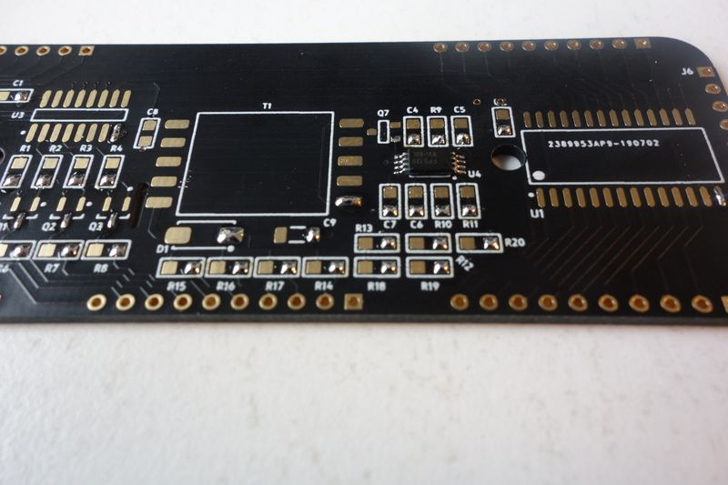Then, use tweezers to position component to the required pads. Once at the pads, melt the solder and the adjust the part to sit flush at the reqired place.
Make sure that you oriented the ICs and the transformer correctly! Please take a look at the photo below.
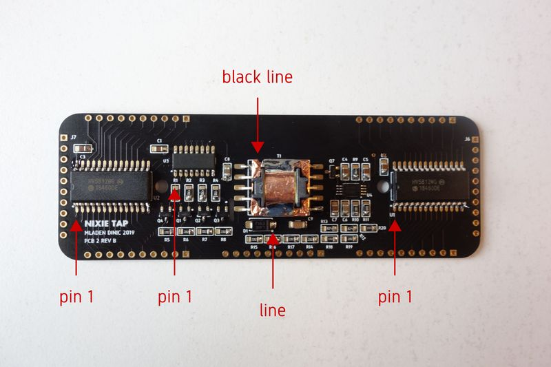After you do this for all components, apply some flux, and solder the opposite side. While the flux is liquid, you can also touch up the side you soldered first.
To solder ICs, you can use the "drag" technique, and soldering the transformer will be trivial for you after you have mastered the previous actions :)
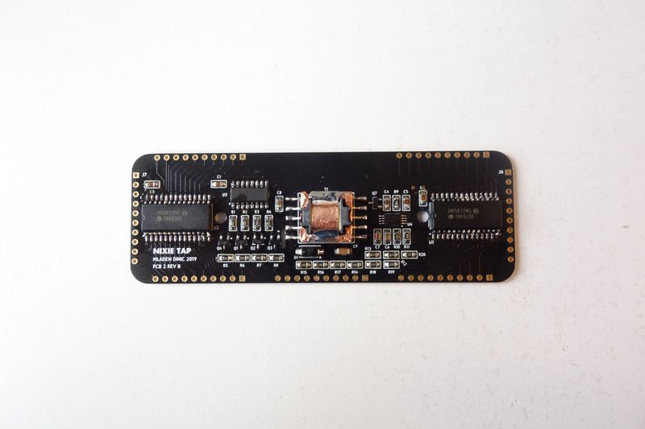Now solder the through-hole connectors.
NOTE: if you have kit version 1.0, please take J2 and J3 from PCB3 kit sleeve. These should go to J6 and J7.
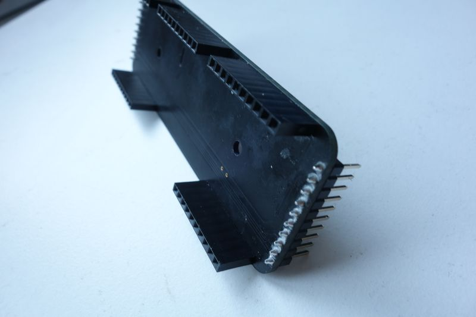If you managed to solder PCB2, PCB3 is just more of the same.
Solder everything at your own leisure, but leave J7 for the end.
NOTE: if you have kit version 1.0, please take J8 and J9 from PCB3 kit sleeve. These should go to J2 and J3.
Each IC has pin 1 marked on its case, please align this dot with the dot found on the footprint.
Touch sensor (basically a small PCB plate) connects to the touch IC via a 2 pin header, J7. This header should be soldered on the rear side of the PCB.
Additionally, if you have KIT VERSION 1.0, a trace on the PCB should be cut. Please click on the picture below for reference.
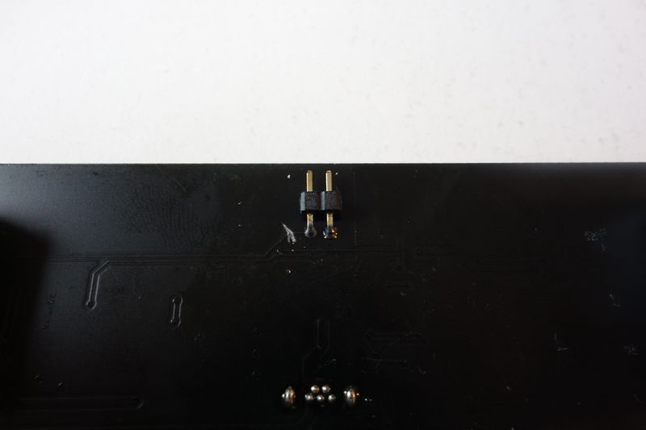Once you do the modifications and soldering, you can remove the plastic part from the 2 pin header, and try to connect the touch plate. It should slide in easily.
Now is the time to pause and reflect. Also please inspect the PCBs, they should look like pictured below.
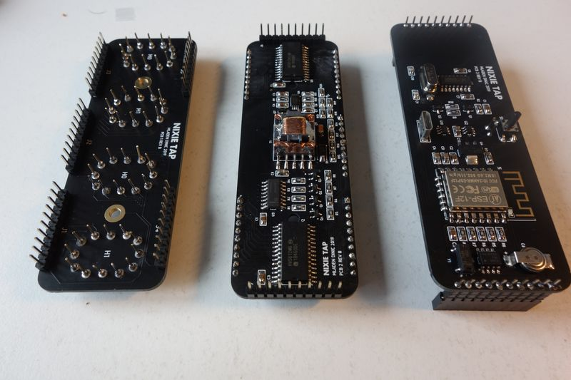 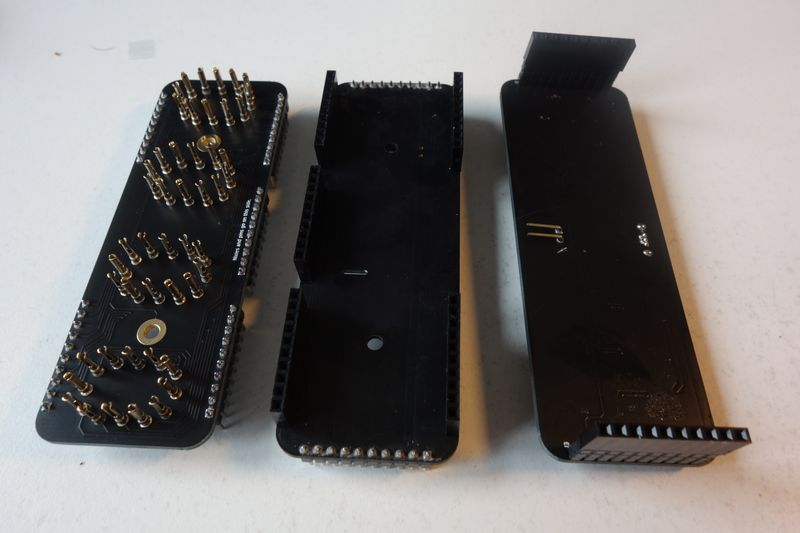When you're finished with soldering, you should clean up the PCBs. There is no single best way to do this, industrial process boils down to ultrasonics+cleaning chemicals, your best hope is IPA.
Try assembling everything. If reality matches the picture below, good job!
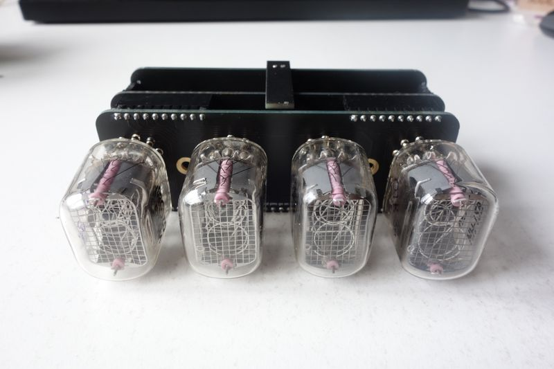Go to Downloads page.
Please return here when you finish! :)
Go to User guide page.
As before, please return here when you finish! :)
The expected outcome of this guide is an assembled Nixie Tap, without enclosure, which shows a random time. When you connect it to a computer, it should show up as a COM port. When you touch the sensor plate, the display contents should change.
If this is not the case with your device, here are some potential causes and solutions.
Check circuitry od the USB interface chip. Parts of interest are: U3, Y2, C9, C10, J1.
Check the whole PCB 3 for bad solder joints.
Check PCB 2 for bad solder joints.
If you reached this step, I have one word to say to you:
CONGRATULATIONS!!! 🥳🥳🥳
Now you can 3d print a comfy case for your Nixie Tap, as I have done here:
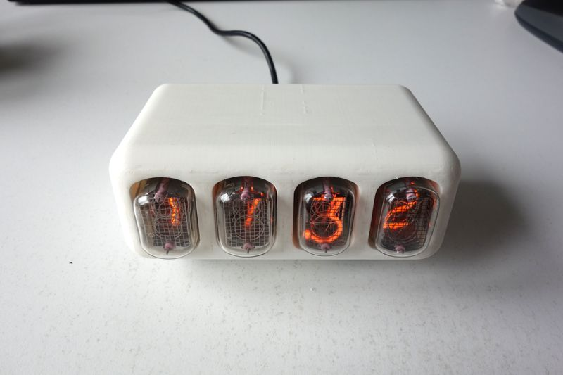Please don't print it in white though. It looks weird.
{kind=link}
{kind=link}
{kind=link}
{kind=link}
{kind=link}
{kind=link}
{kind=link}
{kind=link}
{kind=link}
{kind=link}
{kind=link}
{kind=link}
{kind=link}
{kind=link}
{kind=link}
{kind=link}